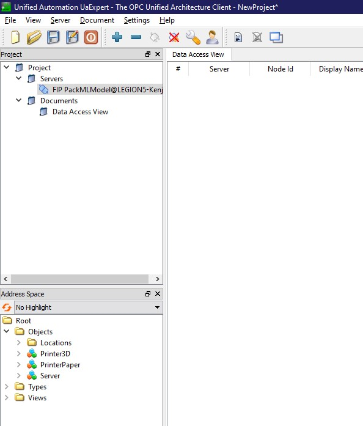

Go back
Connect to the server
- Download and install UAExpert from the official website (need a free account to download)
- Open UaExpert and click on Server>Add
- In the window that opened beneath "Custom Discovery" double click on "Double click to Add Server"
- Type the Endpoint URL that's written in the command line of the server and press OK.
- Double click on the new Endpoint URL that's been added, then double click on the server icon.
- Double click on the red lock (it's written "None" next to it).
- On the left, right click on the electrical plug icon, and click "Connect"
- You are now connected to the OPCUA server.
- Below is an image of UAExpert connected to an OPCUA server with 2 machine instances.
